Traditional notes
- Linear lists hide how ideas connect.
- Hard to see the big picture at a glance.
- Adding depth turns notes into a wall of text.
- Reviewing means rereading from top to bottom.
Upload a file, paste a link, or record a lecture. Mappy AI maps the structure, pulls in relevant visuals, and keeps every node tied back to the source material.
Read the shape before you read the words.
Choose the workflow that matches what you are trying to understand right now.
Drop in the textbook chapter or record the lecture audio. Mappy AI gives you a structured map with figure snapshots embedded — revision-ready in the time it takes to make coffee.
See study workflowUpload the PDFs or paste the URLs. Mappy AI maps each one's methodology, results, and references — every node linked back to the exact source page.
See research workflowBuild the strategy together with live collaboration. Invite teammates as editors or viewers, export to PDF when it's time to present — no more emailing files back and forth.
See team planFive things you won't find in another mindmap tool.

Mappy pulls actual figures from your PDF — and real photos from the web for abstract topics. Real visuals tied to real sources, not generic AI art.


In Visual mode, nodes carry a snapshot of the source PDF page. Click any node and the original PDF opens at the exact page that informed it — never buried behind a footnote.

Click any node and run the AI on just that branch — or type @ in chat to reference any node by name. Faster and less prone to hallucination than full-map chat.

Mappy plans the steps first, then runs each one through a scoped tool — add a child here, rename a label there. Your manual edits survive instead of getting wiped by a regeneration.

Invite teammates or your study group to edit the same map live. Cursors move, nodes update, everyone stays in sync — no more emailing files around or chasing whose copy is the latest.
Side-by-side: Mappy AI vs the typical AI mindmap tool.
Start anywhere. Drop in a source or pick a starting point — Mappy AI structures the rest into a sourced, editable mindmap.
Try it freeDrop in the audio or the lecture PDF — or both. Mappy AI transcribes the recording and embeds slide snapshots from the deck. A 60-minute class becomes a 2-minute scan.
Upload the PDF. Mappy AI extracts methodology, results, and key references — and embeds figure snapshots from the paper itself, every node linked to the source page.
Type a subject and Mappy AI searches the live web for real sources. It pulls in relevant articles and references and builds a cited map — not from memory, from actual pages.
Paste the link. Mappy AI pulls the transcript, structures it into a mindmap, and adds topic images so you can skim the key points instead of going back through the whole thing.
Start from scratch and build your own map by hand. Add nodes, connect ideas, and rearrange as your thinking evolves. Pull in AI to expand a branch or explore a tangent whenever you need it.
Start free with AI included. Upgrade when you outgrow it.
$0/month
Manual mindmapping for small personal projects.
Best for: trying Mappy on a small scale, without collaboration or export.
Get started$4.50/month
$6/month
Billed annually
Billed monthly
AI-powered individual plan.
Best for: individual users who need AI features and export.
Get started Get started$11.25/month
$15/month
Billed annually
Billed monthly
Everything in Pro, plus collaboration and higher AI limits.
Best for: power users and teams that build maps together.
Get started Get startedEverything you need to know before you start.
Free includes up to 3 mindmaps, 5 AI generations (total), manual editing tools, and cloud sync. No subscription needed to get started. It does not include collaboration or PDF export.
You can still open, edit, and delete your existing mindmaps. To create more, upgrade to Pro or Max for unlimited mindmaps.
Pro adds unlimited mindmaps, 40 AI generations per month, and PDF export. Max includes everything in Pro plus collaborative mindmapping, priority support, and 300 AI generations per month.
Free includes 5 AI generations total. Pro includes 40 generations per month. Max includes 300 generations per month. Chat and explain requests don't count — only mindmap generations, refines, and image attaches.
The yearly price is shown as an effective monthly rate. Yearly billing gives a 25% discount compared with monthly billing.
Your plan stays active until the end of the billing period. Your maps are never deleted.
Files and links are used to ground your AI requests. We do not sell or share your data.
You can add PDFs, Word documents, slides, spreadsheets, images, audio, videos, and links to help Mappy AI ground its responses.
Export to PDF is available on Pro and Max plans.
Your content stays in your workspace and is only used to answer your requests.
Start free with AI included. Upgrade when you need more.